Executive Summary
Amnesty International UK (AIUK) has a community of activists who care deeply and are fiercely committed to human rights and to AIUK. The welcoming, supportive tone of interactions during the pilot was praised repeatedly and provides a strong foundation for growth. However, without greater staff involvement, more deliberate attention to the design and governance of the community, and sustained efforts around online engagement, the Community Platform is unlikely to become a long-term success.
We regularly see organisations trying to solve social challenges such as "better engaging activists" primarily through new technologies like community platforms. From the start of this project, we have been clear with AIUK that technology alone cannot address entrenched cultural issues. We have noted that "Staff are part of the community," and that working openly could help narrow the gap between paid and unpaid contributors. Further, we have insisted that a "little tech project over there" would not sufficiently address the ambition of the organisation to galvanise the UK activist community in a way that shows measurable impact.
Our hope is that this final review of the Community Platform pilot prompts Amnesty's leadership and team members to give stronger backing to the DDaT team and the Community Manager, and to bring the necessary attention and effort to a project that has genuine transformative potential.
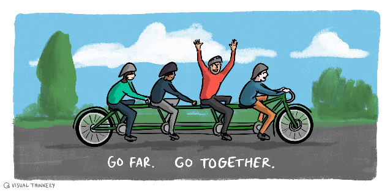
This report evaluates the current status of the new Amnesty International UK's (AIUK) Community Platform after an eight-week pilot with 77 activists across three cohorts: community leaders, network/group members, and new activists. The pilot ran from late January to late March 2026 and used the open source platform Discourse.
Five data sources help us in assessing the success of the pilot:
- Pre-pilot System Usability Scale (SUS) testing with five community leaders
- Survey from the end of the Community Leaders cohort
- Platform analytics from the Discourse admin dashboard
- Qualitative feedback gathered throughout the pilot
- Final survey
The platform was rated as "excellent" with a high SUS score. Most Community Leaders were "somewhat satisfied" or better with the platform. In general, we found that Community Leaders want this to work but will need help getting comfortable.
The platform also scored well on safety (zero incidents, 100% of respondents feeling safe or respected) and community atmosphere (85% rating it "welcoming" or "very welcoming").
The Discourse admin dashboard showed that, while the ratio of daily active users to monthly active users (DAU/MAU) exceeded our initial target, daily engaged users and new contributor rates were lower than we were hoping. This may have, however, been due to setting unachievable targets for a new online community.
The community was positive about their initial experience of the platform, with more than three-quarters saying they were "satisfied" or "very satisfied". The Net Promoter Score is favourable, with over half of respondents being active "promoters". The most consistent feedback themes centred around the need for better onboarding and training, improved event calendar features, and concerns about the digital literacies of community members.
Conditional Go — Based on the post-pilot readiness assessment framework we created before the Pilot began, we recommend a Conditional Go for wider launch. There are specific actions we would recommend including establishing a Product Lead, onboarding improvements, UX refinements (particularly event creation), and a phased rollout strategy.
Introduction
Amnesty International UK (AIUK) set out to create a dedicated online community platform to support its network of activists, educators, and staff. The platform, built on Discourse, aims to replace fragmented communication channels (email lists, WhatsApp groups, social media) with a single, purpose-built space for discussion, resource sharing, event coordination, and community building. Our Technical Discovery Report and Recommendations further explains the ambition of the community and platform.
This evaluation report assesses whether the platform is ready for wider launch. It looks at usability, engagement, safety, and technical performance against our pre-defined success criteria. We look at both quantitative metrics and qualitative feedback from pilot participants. We then make some final recommendations as we pass off the management and development of the Community Platform fully to the AIUK team.
Our understanding upon starting work on this project, and throughout, has been that you want to engage your 80,000-strong activist base with the Amnesty Community. The decisions and approach we have taken in this report is informed by this ambition.
- The platform needs a critical mass of users to fulfil its potential. Several respondents noted the platform would only become truly useful when more group members join. Some expressed frustration that their local group members were not yet engaged.
- The pilot itself was valued by participants. Several respondents expressed appreciation for the collaborative, iterative approach and the responsiveness of the team. Maintaining openness and a fail forward attitude will help during the launch phase.
-
Digital literacy varies significantly across the AIUK community. The pilot included people ranging from extremely familiar to not at all familiar with online platforms. The pilot exposed a clear need to design onboarding and support materials for the least digitally confident users, not the average user. As one respondent put it:
"Don't assume anything about prior knowledge! I appreciate you are communicating to a very diverse audience with varying degrees of skill and experience."
— Community Leader
Preparations
Because sign-off for Discourse hosting took longer than expected, we had less time than we would have liked to set up and configure the platform. Our thinking and prep work, however, helped us quickly implement a number of custom improvements for AIUK. We were then able to run a couple of tests before activists signed into the platform for the pilot.
Platform Testing
In January 2026 we recruited five representatives of the AIUK community to participate in testing of the new platform. Details of how the testing happened, including the script can be found here: Platform testing plan with users (Jan 2026).
One of the important things to test before the pilot was system usability. We used the industry standard 'System Usability Scale' for this, where scores from 68–80 count as above average; 80–90 reach "excellent" levels.
The Amnesty Community platform average of 83 exceeds the "standard" SUS benchmark of 68, placing the platform as excellent. See Appendix 1 for more details.
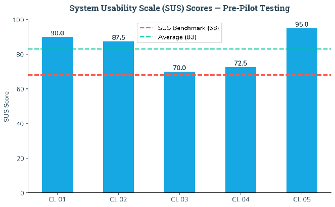
Basic Accessibility Testing
Accessibility is fundamental to creating an inclusive digital experience for the Amnesty Community. It is both an ethical commitment and a practical requirement. We ran an initial accessibility check that was intentionally basic in scope.
We felt that this basic accessibility testing showed that we are in good shape for the initial pilot. We addressed a number of issues that would have been difficult to find without testing, and we've pointed out some areas for future improvements. Accessibility testing is an area that AIUK should further invest in.
A full overview of this testing can be found in the Accessibility Testing document.
Pilot
The success of AIUK's activist community platform depends not on speed of launch, but on the quality of insights gathered and applied throughout the development process. We therefore ran an 8-week pilot with three groups of AIUK community users. Such a methodical approach delivers better outcomes for both the organisation and its activist community.
The pilot operated entirely within AIUK's new platform, with participants distributed across various geographical locations and network affiliations. Training sessions, workshops, and community interactions took place online, with recorded sessions to accommodate any issues around availability.
The pilot was separated into three phases:
- In phase one, we gathered feedback from community leaders around the initial configuration and setup of the platform, as well as on the core features for community profiles, groups and networks.
- In phase two, we invited network and group members to help us test community leadership tools and moderation capabilities with experienced activists. We wanted to look at how well the leadership and moderation tools work. We also continued to gather feedback on the structure and setup of the platform.
- In the third phase, we invited new activists to test how well the community can use decentralised group management tools.
We set ambitious targets for the pilot so that we could assess whether or not the platform is ready for a phased launch. A detailed look at the activity, participation and community health metrics that make up our pilot targets can be found in Appendix 2: Usage Reports.
We have also collected quantitative and qualitative data from pilot participants. This serves as the basis for the next section, Lessons Learned. To see more about what users thought as well as a sentiment analysis, please see Appendix 3: User Feedback and Appendix 4: Week One Data.
Lessons Learned
In this section we summarise the insights we gained from running the pilot with active AIUK community members. In the following Recommendations section, we use these lessons to unpack practical ways forward to help ensure the Community Platform's success.
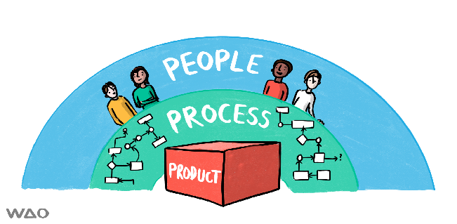
Platform is sound, but the product needs support
"Although it takes a little getting used to, and some features, such as creating an event, are not really what I'd call intuitive, it's a good, ambitious platform with a lot of potential"
— Community Leader
The pilot showed that the platform scores highly on usability and safety, and is welcomed by activists, but that Amnesty's organisational culture, staffing, and processes now need to develop in step with the technology for it to succeed.
Recommendations: Team and Roles
- Establish a Product Lead to support the Community Manager, shape the product roadmap, set priorities for feature development
- Find a UX Designer to help improve the accessibility and usability of the platform
- Facilitate cross-team group to support the platform
Focus should be put on usability before integrations
"I see it as the future of the organisation."
— General Network Member
Before focusing budget and staff's time and energy on new integrations, usability of the current feature set should be improved. In particular, the pilot showed that activists are eager for a more sophisticated community event calendar, a feature set that was not part of the original scope.
Recommendations: UX
- Fork and develop the Calendar and Events plugin
- Create a more visual homepage and cleaner navigation
- Improve the search functionality by turning on AI-assisted search
Engagement and content go hand in hand
"My intro post was liked and I got a badge!"
— New Activist
While active users tend to return regularly, overall engagement remains limited because many activists' peers and local group members are not yet on the platform, and the platform is not yet positioned as a central place to get things done.
Recommendations: Content
- Iterate the Onboarding and Training offerings
- Show how the platform can be useful
- Continue to think through Labels, tags and categories
Slow and steady integrations
"It has effectively still been through email comms — just email notifications relating to the portal rather than directly."
— General Network Member
The Community Platform should be positioned as the place where the community comes together. This means ensuring that other technologies in the ecosystem are linking to the platform and pulling announcements and public discussions from it.
Recommendations: Integration and Ecosystem
- Surface key updates on the website
- Implement SSO
- Protect privacy while integrating the new CRM
Goodwill is a key asset
"I'll continue to use it because the platform has been provided for us, by people who have thought about and put huge effort into getting it right, and despite my reservations (which may be due to my lack of experience), I want to make it work."
— Community Leader
People were pleased to be involved in the pilot process. Many respondents expressed appreciation for the pilot process and a desire to "make it work", which is an important resource to draw on during the next phases of rollout and change.
Recommendations: Community involvement
- Invite engaged activists to be moderators
- Institute a peer 'buddy' system
- Work openly
Recommendations
Team & Roles
"I have been wanting such a platform for many years and believe it can be very useful in sustaining and building Amnesty's network of activists. I have concerns that uptake amongst others will be slow, and who decides and implements the changes in structure flagged up in the pilot."
— General Network Member
Establish a Product Lead
The Community Platform needs a dedicated Product Lead to support the Community Manager. Both roles are important: one has a technical mindset to manage the product, the other focuses on relationship building and community health.
Product Lead responsibilities:
- Shape the product roadmap and set priorities for feature development
- Decide which bugs to fix and which trade-offs to accept
- Find community specific plugins and components
Community Manager responsibilities:
- Create relationships with community members and encourage participation
- Communicate updates and listen to community feedback
- Organise trainings, events, discussions, and outreach
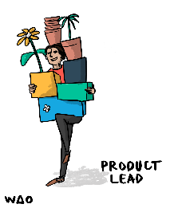
These roles have different skillsets and work in tandem to create a space where activists can allow the platform to fade into the background as their work comes into the foreground. Given the different mindsets and focuses, we've written Appendix 5 to help a future Product Lead take over the platform responsibilities that are out of scope for a Community Manager.
Find a UX Designer
Utilising the design framework created for the website has helped the platform look and feel like part of the organisation. However, there are missing design rules as the community platform is inherently more interactive than the website. Additionally, the refreshed brand guidelines gave little flexibility to creating engaging interactive content for the community. An interactive interface has accessibility requirements that are not covered in the branding.
Having a UX designer working together with the rest of the platform team would ensure that someone with the specific design skills and competencies that are needed for a platform like this one is on hand to continuously improve the accessibility and usability of the platform.
Facilitate cross-team group to support the platform
As we detailed in Processes and Workflows, a number of team members need to work together to make the Community Platform a success. Sustaining the platform will require coordinated contributions from DDaT, activism, campaigns, and other teams so that there is a steady flow of relevant content, events, and staff presence on the platform.
Community members are trying to learn, coordinate, share, connect and stay informed, the platform can help with that, but only if there is content in it and people on it.
UX
"I had to try clicking on a few magnifying glasses, before spotting the 'correct' one on the Categories page. I was trying to do a search from within one of the categories and it wasn't offering me the option to perform an advanced search, presumably because I had already started to narrow this search down"
— Community Leader
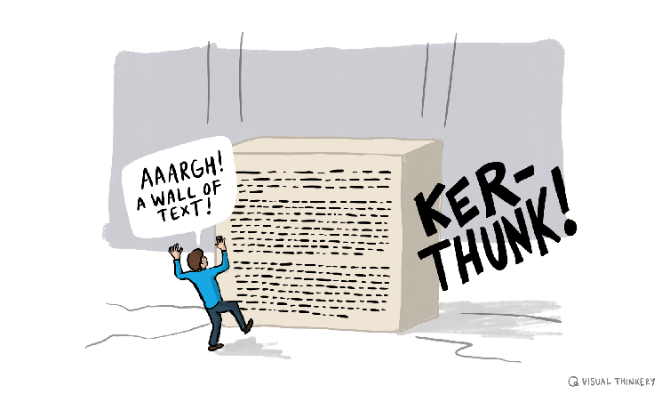
Fork and develop the Calendar and Events plugin
Creating and managing events was consistently described as unintuitive, hard to find, and overly complex, making it the single most urgent UX problem to address before wider launch. Suggestions included adding a more prominent button, simplifying the workflow, and providing clear step-by-step guidance. The calendar feature also posed challenges, with respondents unclear about how to add events and how the calendar interacted with other platform features.
We've included more detail in Appendix 5. Once a Product Lead understands the issues with this plugin, we recommend talking to Communiteq about the possibility and cost of "forking" the Calendar and Events plugin and customising it for AIUK's needs.
Create a more visual homepage and cleaner navigation
The platform needs clearer signposting to key areas such as regions and networks, better use of headings and breadcrumbs, and a more informative landing page so that less confident users can see where to go and what to do. Navigation and wayfinding was tricky for less experienced users. Some participants reported not being sure where they were on the platform, who they were communicating with, or how to target posts to specific groups (for example, Wales-only groups).
A more visual platform would be appropriate and is feasible throughout the platform, but it requires more design, development, and investment. For example, Categories and Subcategories can have a featured image, which we've included within each category. How would the landing page feel if those images were integrated into the homepage template? In addition, we had initially planned for the map to be featured directly on the home page, but ran out of time and budget to make that happen.
Improve the search functionality
Search was rated as only okay by many users (45%), which suggests that search can likely be more useful. No specific issues were described in the qualitative feedback, but the moderate ratings indicate room for enhancement. Investigate whether Discourse's search configuration can be optimised, and consider adding guided search or filtering options.
We expect that people want an integrated search across the Community Platform, the Website and the Knowledge Hub and have included this in Appendix 5: Product Handover Notes.
Content
Based on feedback during the pilot, we made numerous changes to the content and functionality of the platform. For example, many of the issues raised during the Pilot have either been actioned or are currently being discussed by the community.
"In these challenging times it is more important than ever that we stand together to oppose the divisive rhetoric and the anti- human rights factions. This new community platform has the potential for us to easily share connections, resources, ideas and events."
— Local Group Leader
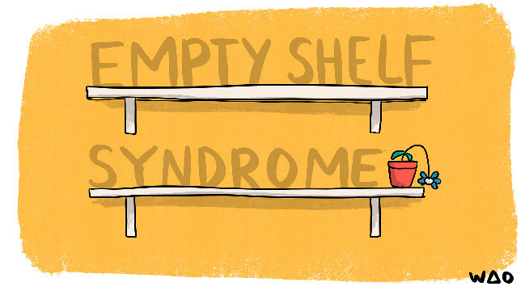
Iterate the Onboarding and Training offerings
Reflections on "Getting started" flows were mixed. Some found onboarding and training easy while others struggled with pace, terminology, and assumed prior knowledge. This highlights the need to design onboarding and training for the least digitally confident. Participants repeatedly asked for step-by-step guides, more screenshots, slower training, and even printed materials, suggesting that future training should emphasise repetition, simple language, and "start from zero" examples.
New users should encounter a simple welcome experience that explains what the platform is for, shows common tasks through examples, and guides them through their first steps with visual, step-by-step support. Much of this content exists, but it needs to be surfaced better.
The Training category showed that using Discourse features like replies can help moderators and staff manage training and onboarding content with shareable links. Multiple strategies for content organisation exist. As an example, see our experiments in the Training category:
- Admin / Mod training using shareable linking technique: community.amnesty.org.uk/t/site-wide-elements-and-settings/834
- Basic training using topics instead of replies: community.amnesty.org.uk/c/onboarding/basics/50
Show how the platform can be useful
The more content and interaction happening on the platform, the easier it will be for staff and community members to imagine what the platform is capable of. Discourse is widely extendable and can help coordinate both people and collaborative work. Encourage moderators to split topics and threads to better organise content and work to surface insightful and meaningful content from community members. Spend time facilitating the community and help them create things like case studies, static pages, best practice wikis and engaging, visual threads.
Continue to think through Labels, tags and categories
Some participants found it hard to know where they were and where to post, and some questioned labels such as Chair, Secretary, Treasurer, indicating that information architecture, naming, and wayfinding need to be better aligned with how activists actually work.
There is a risk that too many tags and an over-complicated category structure will make the platform harder to use, so tags, groups and categories should be based around real, repeated use cases. An overly complex tagging system could undermine the platform's usability.
Integrations and Ecosystem
"If all our activists were happy to use it, it might be a good way to communicate, but I know that many people in our group won't want to use it, so I'll still have to send emails with newsletters, events, bulletins etc. So instead of streamlining my work, it might increase it [...]"
— Category Moderator
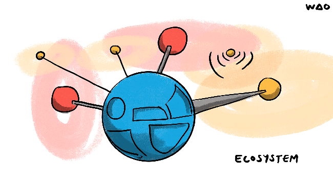
Surface key updates on the Website
Improving the connection between the website and the Community platform will help signal that the platform is a core part of Amnesty's activist infrastructure rather than a side project. Soon after the pilot, it would be good to serve announcements from the community platform on the AIUK website. Given it is new, both staff and activists need to be encouraged and reminded to post on the community platform rather than the AIUK website.
Implement Single sign-on
Implementing single sign-on across the website, Knowledge Hub, and Community Platform, at least for staff, would make it easier to move between tools and would help the platform feel integrated into AIUK's wider digital environment.
In our technical report, we suggested that the community platform implement single sign-on from the public launch phase and, if possible, during the Pilot phase. We explained that it was dependent upon collaborating with the other teams working within the digital transformation project (e.g. Website, Knowledge Hub, IT team). Technically speaking, this shouldn't be a large project as we selected a platform that allows for SSO. However, our current understanding is that other teams have not uncovered a need for SSO.
Providing single sign-on between the different parts of the ecosystem is a convenience that may be afforded to staff members in the short-term and expanded to other community members when projects like the CRM and the Supporter Portal start gaining traction.
Protect privacy while integrating the new CRM
AIUK has selected Salesforce as the new CRM to be implemented throughout 2026 and into 2027. As part of the CRM project, careful consideration should be given to what kinds of information are synced between the community platform and the CRM. Linking these two tools needs careful design so that any association between pseudonyms and real identities is secure, consent-based, and aligned with AIUK's human rights obligations. The data flows across the ecosystem need, however, careful thought and planning, as well as a dedicated adherence to data privacy.
Community involvement
"Having space for the Central England Network has been helpful seeing what other groups are doing has been insightful"
— Community Leader
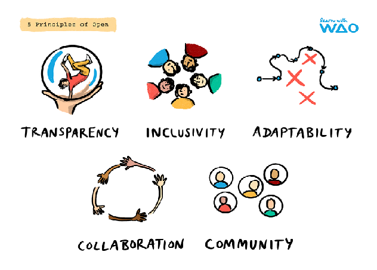
Invite engaged activists to be moderators
There are a number of activists who are enthusiastic about the new platform and wish to see it succeed. People responded that they were happy to be asked to lead during the pilot. Continue to expand the moderator pool and give long-serving AIUK activists special trust levels, badges and attention.
Our community management plan serves as an operational handbook on how to scale and improve. Continue to invite engaged people into this project and iterate the product. Ensure that contributor pathways are well documented and that AIUK changes methods and behaviours to collaborate directly with community members.
Institute a peer 'buddy' system
Given the variation of digital literacies and confidence amongst the community as well as the goal of increasing collaboration, we recommend setting up a peer 'buddy' system. Several participants responded that they were worried about the technical ability of some of their colleagues. As people join the platform, they might be paired with a Community Leader who is already familiar with the platform and the categories within it.
Work openly
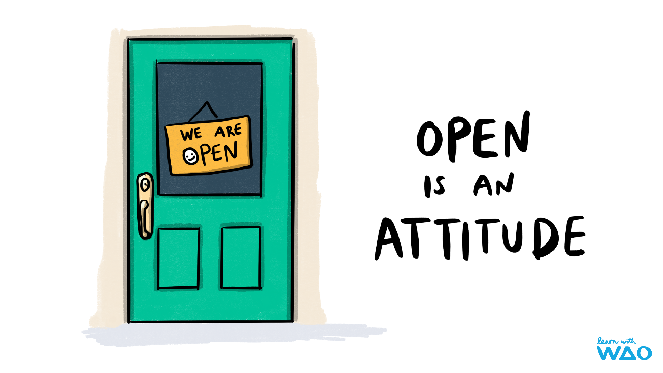
We've written extensively over the years on the benefits of working openly. Ultimately, it is about cultural change. A change in attitude as much as a change in processes. During the pilot, we sought to work directly with activists though our access was limited. We recommend making a shift towards working more openly and transparently, with activists, with contractors and with one another. It is a strategic move that can significantly enhance AIUK's agility, innovation, and engagement.
Risk & Scalability
"I want it to continue as a safe space, so am prepared to do my bit to help"
— Community Leader
Based on the pilot findings, we pulled together the following risks to pay attention to as you roll out the platform to a wider audience:
| Risk type | Description | Mitigation | Risk level |
|---|---|---|---|
| Adoption | A lot of people who answered the survey expressed concern that their peers wouldn't join and actively use the platform. | Continue with thoughtful and phased rollouts. Improve onboarding support, training and community coordination help. Identify and empower community mentors. | High |
| Digital Exclusion | There was a significant variation in levels of digital literacy skills amongst the participants in the Pilot. Some described it as intuitive, whereas others considered it overwhelming and unfamiliar. | Provide tiered training materials. AIUK should not assume prior platform knowledge. Use a peer support 'buddy' system to help those who are less confident. | Medium |
| Volunteer Burnout | One respondent actually wrote that they were worried about losing sleep over the platform, saying that it might mean more of a workload rather than less. | Help people understand that the platform can be used to complement other channels and help demonstrate easier ways to do cumbersome things. | Medium |
| Channel Fragmentation | As email and WhatsApp is so entrenched amongst AIUK activists, community leaders may need to maintain parallel communications channels to the platform until it achieves critical mass. | Provide guidance and provide a way for groups to share good practice around migrating activists to the platform. Create examples and plans to help move more communication onto the Amnesty Community. | Medium |
| Moderation Scalability | Moderation needs were minimal during the pilot due to small numbers and a self-selecting, motivated group. At scale, moderation demands will increase. | Pathways to category and site-wide moderation need to be explicit and training should include clear escalation rules. | Low-Medium |
There is a difference between scaling technically and scaling socially. Processes, procedures and cultural alignment need to be core to the future phases of the rollout.
The pilot operated with 77 users. Scaling to AIUK's full community will require attention to several areas. There may be future technical scalability considerations such as server capacity, the hosting arrangement, or plugin or customisation implications needed for a larger user base.
With 6 moderators for 77 users, the pilot had a relatively high ratio of moderators to users. At scale, AIUK will need to recruit and train additional moderators, or develop more robust automated moderation tools.
The personalised, small-group training that was used during the pilot will not scale easily. AIUK should continue to develop self-service onboarding resources (video tutorials, written guides, FAQs) and host periodic live training sessions. Encouraging community members to run their own trainings and providing them with resources to do so will also help with scalability.
The engagement metrics should continue to be tracked post-launch, with the targets reviewed and recalibrated based on benchmarks from comparable Discourse-based communities.
Our Assessment
Here we are applying the Go/No-Go Decision Matrix from the Post-pilot Readiness Assessment Framework. Our review of the data shows why we feel justified suggesting a Conditional Go for wider launch:
| Domain | Success Criteria | Result | Assessment |
|---|---|---|---|
| Usability | SUS ≥68 | SUS 83 (pre-pilot) | ✅ Met |
| Usability | 75% task completion, ≥4/5 mobile rating | Feature ratings broadly positive; device rating 75% Good/Excellent | ✅ Broadly Met |
| Engagement | DAU/MAU ≥15% | 17.95% | ✅ Met |
| Engagement | 50% topics with replies | 28% (72% unanswered) | ⚠️ Not Met (For context: many posts in the community are designed to be broadcast) |
| Engagement | ≤8hr response time | Widely achieved | ✅ Met |
| Safety | ≤72hr flag resolution | Not required | ✅ Met |
| Safety | >4/5 safety rating | 100% felt safe/respected | ✅ Met |
| Safety | Zero unresolved incidents | Zero | ✅ Met |
| Technical | WCAG AA critical issues = 0 | Basic testing passed | ✅ Met (basic level) |
| Technical | 99.5% uptime | No downtime reported | ✅ Met |
At the very least, the conditions for launch should include finding a Product Lead, implementation of the UX priorities identified above and an expansion of the content, especially to help improve onboarding and training. The launch should follow a phased rollout strategy with intensive support.
Conclusion
The eight-week pilot of the Amnesty Community platform has demonstrated that the platform is fundamentally sound, safe, and welcomed by its users. The pre-pilot SUS score of 83 places usability well above the industry benchmark, the community atmosphere has been consistently praised, and safety outcomes have been met.
The pilot also revealed areas for improvement. We have used this report to identify friction points, usability issues, and technical challenges gathered through analytics and user feedback.
A Product Lead should take over to guide the UX improvements. Onboarding must be redesigned to accommodate users with no prior experience of online community platforms. Engagement rates, while understandable for a new platform with a small user base, will need active attention through community management, content seeding, and outreach.
Indeed, as we've indicated throughout this project and this report, this project has only just begun and will need the support of more people on the AIUK team.
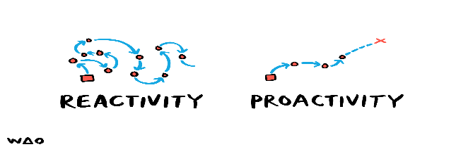
Acknowledgements
Thank you
Illustrations in this document are CC-BY-ND Bryan Mathers for WAO.
We are grateful to the Community Leaders and activists who took part in the pilot. We hope this report and other project documents will be shared openly with the community. We are also grateful to Elly Crump and Abi Odell for their collaboration and guidance. A special thank you to Andrea Buccioni as well.
How we used AI
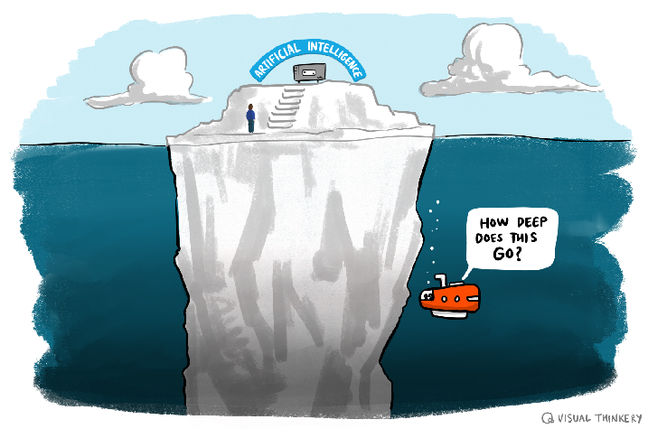
As the authors of the Friends of the Earth UK report Harnessing AI for environmental justice, we believe in the practice of transparency around the use of AI.
During the production of this report, we used several AI frontier models including Gemini, Claude, and Perplexity. We also used local models including qwen3.5, Llama 3.2 and Deepseek R1. During our use of AI we obfuscated details with privacy aware methodologies to ensure identification details were separated from qualitative data. We used local downloads, or knowledge stacks, to interrogate the data so that we could reflect it back to AIUK in this report. We also used AI to restructure our messy notes document into something readable, which we then restructured again, and for small and annoying formatting enhancements. Some initial phrasing was generated, but we took time to edit, rewrite and generally overhaul whatever AI initially output.
Future contacts
The AIUK Community Platform project was one of the final projects for We Are Open Co-op. We are pleased to have had the opportunity to work with you and are delighted to end this bit of work with our future contacts:
- Laura Hilliger can be contacted at hello@laurahilliger.com
- Doug Belshaw can be contacted at hello@dynamicskillset.com
- John Bevan can be contacted at hello@johnbevan.com
Appendices
These appendices accompany the Final Evaluation Report above. The report contains the narrative findings; this section holds the supporting data and technical handover notes. The two should be read together.
This appendix set was produced at the close of the Amnesty Community pilot, hosted at community.amnesty.org.uk. The platform is built on Discourse, hosted by Communiteq via Discoursehosting. The appendices document what was measured, what users said, and what remains to be done.
There are five appendices in total. Appendices 1–4 capture quantitative and qualitative data from the pilot period. Appendix 5 — the Product Handover Notes — is the most immediately actionable, containing a detailed checklist of outstanding technical work for the Discourse platform.
Appendices 1–4: Pilot Measurement Data
The first four appendices provide the quantitative and qualitative evidence base for the evaluation. They are primarily intended for readers of the Final Evaluation Report who want to examine the underlying data supporting the report's findings.
System Usability Scale (SUS) Scores
Standardised usability scoring from pilot participants
The System Usability Scale is an industry-standard 10-item questionnaire that produces a composite usability score between 0 and 100. Participants in the Amnesty Community pilot completed a SUS survey to give the team a standardised measure of how usable the Discourse platform felt to actual users.
SUS scores provide a consistent benchmark that can be compared against other digital products and against future iterations of the platform. A score above 68 is generally considered above average; scores above 80 indicate strong usability. The full results are recorded in this appendix.
Why SUS?
The SUS questionnaire is technology-agnostic and quick to administer, making it well suited to community platform evaluation where participant time is limited. It is widely used in civic technology and third-sector digital projects.
Usage and Analytics Metrics
Platform engagement data across the pilot period
This appendix records platform usage data gathered during the pilot. Metrics cover site visits, active users, post volume, topic creation, and other engagement indicators drawn from Discourse's built-in analytics and any supplementary tracking tools in use.
The data provides a factual picture of how much the platform was used during the pilot and where activity was concentrated — which categories, which time periods, and which user cohorts were most active. This informs the evaluation's findings on adoption and engagement.
User Feedback Survey Results
Qualitative and structured feedback from pilot participants
A structured feedback survey was distributed to pilot participants to capture their experiences of the platform. The survey gathered both quantitative ratings and open-text responses, giving the evaluation team a picture of what users valued, what frustrated them, and what they would change.
This appendix contains the full survey results. Key themes from the open-text responses are summarised in the Final Evaluation Report above; the raw data is recorded here for reference.
Connecting data to action
Several items in the Appendix 5 product checklist were directly informed by the feedback survey — particularly around the calendar/event plugin experience and the navigation and homepage design.
Week-One Pilot Data
Early adoption metrics from the platform's first week
The first week of a community platform launch is a distinctive moment — early adopter behaviour, onboarding friction, and initial engagement patterns are often markedly different from steady-state activity. This appendix records the specific data gathered during week one of the pilot to capture that early-stage picture.
Week-one data is useful for understanding the effectiveness of the launch approach, the ease of the onboarding flow, and which features or content areas drew users in first. It provides a baseline against which later engagement data (Appendix 2) can be compared.
Appendix 5: Product Handover Notes
The Product Handover Notes are the most actionable output in this appendix set. They document outstanding technical items for the community.amnesty.org.uk Discourse platform that were identified during the pilot but not completed before handover. These items now fall to the AIUK Product Lead and platform partners to resolve.
Who this section is for
- AIUK Product Lead — owns prioritisation and the feature request process
- Communiteq — Discourse hosting partner, responsible for component bugs and staging
- Torchbox (TBX) — CMS provider, needed for the search integration workstream
Product Handover Notes
Outstanding technical items for the Discourse platform at community.amnesty.org.uk
Platform Environments
The Amnesty Community platform operates across two live environments, with a dedicated support channel for issue tracking:
| Environment | URL |
|---|---|
| Production | community.amnesty.org.uk |
| Staging | amnestyukstaging.discoursehosting.net |
| Communiteq Support | support.communiteq.com/c/amnestyuk/38 |
Outstanding Items Checklist
The items below were identified during the pilot as needing attention post-handover. They are grouped by area. None were completed before the end of the pilot period (March 2025).
-
Feature Request Process — No formal process exists for community members or AIUK colleagues to submit feature requests. The Product Lead needs to establish this. Without a structured process, ad hoc plugin and component installation risks platform bloat and user confusion.
-
User Stories — A range of user stories were prepared during the pilot but not actioned. These should be reviewed and prioritised by the Product Lead. See: User Stories — Community Persona Spectrums
-
Full requirements research — Event functionality needs a thorough requirements review before further development work is commissioned.
-
Mobile UX fix — In mobile view, events currently display as a grid layout. They should display as a schedule/list view to be readable on small screens.
-
"Create Event" button visibility — Event creation is currently buried inside the Options menu when composing a new post, and is trust-level dependent. The recommendation is to add a visible "Create Event" button directly on the Calendar view and in the Navigation Menu.
-
Accessibility review — Mobile UX and accessibility issues with the Calendar/Event plugin need addressing before the plugin is considered production-ready.
-
Wider event tool audit — Multiple event tools are in use across the organisation. These need rationalising to avoid duplication and confusion for activists.
-
Map on front page — A map component was originally planned for the homepage but was not implemented. Adding it requires custom templating and development work because the front page is generated by the Category Groups component, which limits what can be added without custom templates.
-
Homepage redesign — A full homepage redesign using a custom template is recommended to make the landing page more graphic and welcoming for new and returning members.
-
Component testing on staging — Several components need to be tested on the staging server before being promoted to production. This should be a standing process rule going forward.
-
Category Groups component update breaks custom styles — An update to the Category Groups component breaks custom styles applied to the platform. Issue logged at: Communiteq support thread #1287
-
Quick Profile Links bug — The Quick Profile Links component (used to help users find their own profiles) has a known bug. AIUK needs to decide whether to prioritise a fix. Bug logged at: Communiteq support thread #1288
-
Cross-platform search — Users should be able to search external Amnesty platforms (Knowledge Hub, main website) from within the Community Platform. Importantly, Community Platform content should not be surfaced via the Knowledge Hub or Website — the flow is one-way inbound.
-
Search plugin decision required — Two options have been identified:
- Discourse Algolia Search plugin
- Elasticsearch integration — Torchbox's CMS already uses Elasticsearch, which may simplify this path
A decision requires collaboration between Torchbox (TBX) and Communiteq to agree on approach and technical ownership.
Key Third Parties
Resolving the outstanding items above will require engagement with the following organisations:
| Party | Role |
|---|---|
| Communiteq | Discourse hosting provider. Primary support contact for platform bugs, component issues, and staging environment. Support channel: support.communiteq.com/c/amnestyuk/38 |
| Torchbox (TBX) | CMS provider for Amnesty UK's main web properties. Uses Elasticsearch in their CMS stack. Collaboration required to agree on search integration approach. |
| AIUK Product Lead | Internal owner. Responsible for establishing the feature request process, prioritising outstanding checklist items, and co-ordinating with Communiteq and Torchbox on technical decisions. |
Reading this alongside the Evaluation Report
These appendices are reference material. The narrative interpretation of what the pilot achieved — including usability findings, adoption rates, community sentiment, and recommendations — is contained in the Final Evaluation Report above.
Suggested reading order
- Start with the Final Evaluation Report (above) for the headline findings, context, and strategic recommendations.
- Return to Appendices 1–4 if you want to examine the underlying data behind specific findings in the report.
- Use Appendix 5 (this section) as a working document — the checklist items should be triaged and assigned by the AIUK Product Lead as part of the post-pilot handover.